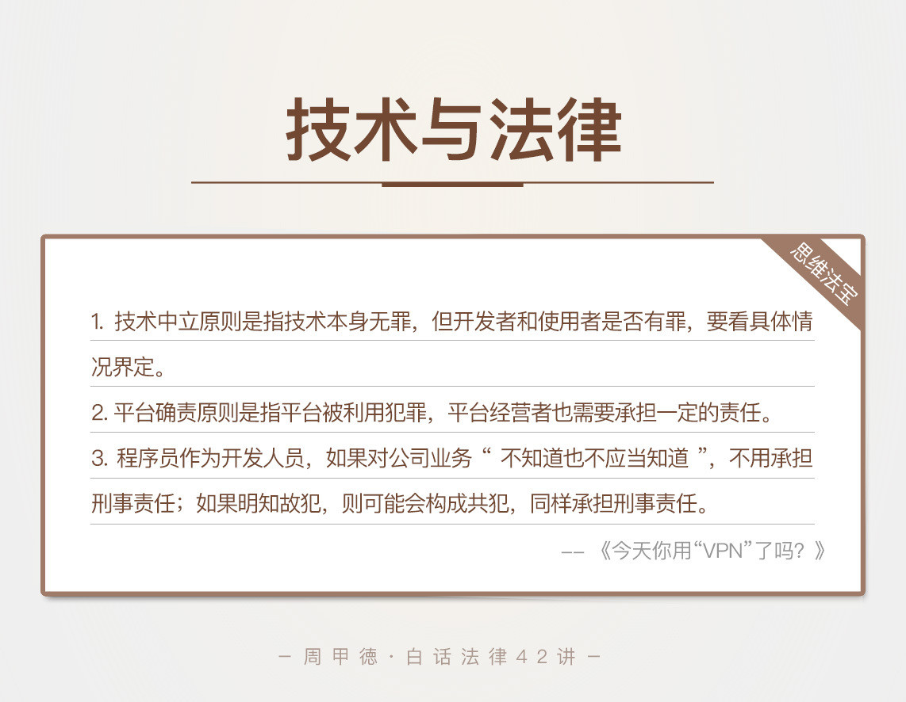

- 00 开篇词 这年头，你真应该懂点法律常识.md
- 01 “老周，我想知道” 常见法律认知盲区（一）.md
- 02 “老周，我想知道” 律师就在你身边（二）.md
- 03 “老周，我想知道” 律师就在你身边（三）.md
- 04 “老周，我想知道” 律师就在你身边（四）.md
- 05 创业未捷老板跑，社保工资哪里讨？.md
- 06 保密还是“卖身”，霸王条款怎么看？.md
- 07 编造流言蹭热度？看守所里降温度！.md
- 08 合同在手欠款难收，报警有用吗？.md
- 09 致创业：谁动了我的股权？.md
- 10 又见猝死！工“殇”究竟是不是工伤？.md
- 11 期权的“前世今生”.md
- 12 裁员面前，你能做的还有什么？.md
- 13 抄袭、盗图为什么做不得？.md
- 14 加班、工资、休假，你知道多少？.md
- 15 受贿原来这么“容易”.md
- 16 今天你用“VPN”了吗？.md
- 17 漏洞在眼前，可以悄悄破解吗？.md
- 18 “爬虫”真的合法吗？.md
- 19 非法集资到底是个啥？.md
- 20 黄色网站？不仅仅是“黄色”罪名.md
- 21 谁修改了我的积分资产？.md
- 22 外挂真能大吉大利吗？.md
- 23 如何看待“从删库到跑路”？.md
- 24 “伪基站”是你的避风港吗？.md
- 25 “网络诈骗”真的离你很远吗？.md
- 26 智斗中介：“北上广”租房图鉴.md
- 27 买买买！买房的“避坑”指南.md
- 28 闪婚又闪离，彩礼怎么理？.md
- 29 离婚还想和平？你要这么做.md
- 30 遗产继承的爱恨情仇.md
- 31 骗术升级？假结婚、假离婚的那些事儿.md
- 32 孩子学校受伤，谁之过？.md
- 33 如何让欠债还钱真正“天经地义”？.md
- 34 从透支到盗刷：人人须知的银行卡纠纷.md
- 35 远离“套路贷”的套路大全.md
- 36 危险！酒驾为什么被罚那么重？.md
- 37 老人倒地，“扶”“不服”？.md
- 38 “能动手就别吵吵”，代价你真的知道吗？.md
- 39 发生交通事故，如何处理？.md
- 40 交通事故综合法宝.md
- 41 婚姻家庭综合法宝.md
- 42 买卖房屋综合法宝.md
- 一键直达 法律专栏“食用”指南.md
- 加餐 “新冠肺炎”影响下，17个常见法律问题解答.md
- 结束语 法律，不会终止的篇章.md
16 今天你用“VPN”了吗？
近几年频发的“网约车杀人”案件，把顺风车一次又一次地推上了风口浪尖，其评价系统更是备受争议。顺风车车主可以对乘客进行评价，并会显示在乘客的个人信息中，司机在接单前就能看到这些，进而选择乘客。
评价系统的出发点是好的，但是因为有“颜值爆表”、“安静的美少女”这类的评价，被一些不怀好意的人利用，造成了惨剧。除了做坏事的人要担责外，剩下的究竟是技术问题、开发者问题还是公司经营的问题呢？这些都值得我们思考。
今天我们就来讨论一下技术与法律的关系，一个典型就是“VPN”翻墙问题。我曾经见过这么一个案例，一家科技公司的开发工程师小李，因为公司业务要求，准备在网上搭建“VPN”服务器，然后卖翻墙软件和会员账号来赚钱。
不过小李隐约感觉“VPN”是灰色地带，但又不太确定，所以来找我咨询。
我给了小李怎样的答案呢？我们先来了解“VPN”相关的知识和规定，你就可以明白了。
法律知识
“VPN”，即虚拟私人网络，是一种常用的安全通信方式。使用“VPN”软件连接外网，也就是通常所说的“翻墙”。
过去有不少企业使用“VPN”来保护通信安全，防止泄露商业秘密。后来也有不少个人使用“VPN”来连接外网、获取信息，很多“VPN”软件商应运而生。
但是，要注意的是，工信部曾明文规定，如果没有电信主管部门的批准，任何企业都不能自己建立或者租用“VPN”，开展跨境的经营活动。而对于有办公需要的外资企业和跨国企业，可以向合法的电信业务经营者来租用“VPN”。
另外，私人“VPN”、经营“VPN”业务的公司，在我国也都是不合法的。
2014年网信办的成立，再次加大了监管的力度，“VPN”软件也更难存活。已经有很多的个人或公司因为销售“VPN”而被判刑，而且相当一部分人被指控为“提供侵入、非法控制计算机信息系统程序、工具罪”。因为这个罪名本身还有一些争议，在这里我不做过多讨论，你也不需要去记住它。但是，目前来看，私自搭建“VPN”并且售卖的行为，明显是违法的。
情景分析
明白了这些，我们都清楚，小李自然不能接下这个任务。他应当明确拒绝，并说服老板，不然甚至可以考虑辞职了。因为，如果公司开展售卖“VPN”的业务，可能受到以下处罚。
1.行政处罚
根据《互联网信息服务管理办法》的规定，开发“VPN”并对外销售，所有的违法收入都会被没收，还要交违法收入的3到5倍作为罚款。如果没有收入或者收入不到5万元，罚款为10万到100万元。情节严重的，网站也会被关闭。
2.刑事处罚
如果“VPN”销售业务的经营数额达到50万元，或是非法收入达到10万元，那么相关经营者犯非法经营罪。
而对于开发人员小李来说，如果他知道公司在做“VPN”的经营销售，还帮助公司搭建了服务器，就属于“知法犯法”。一旦公司行为构成了犯罪，小李就可能会被认定为“共同犯罪”，也就是“共犯”。
如果小李只是普通技术人员，按照公司的要求写代码、做开发，对于公司的具体业务并不知情，那么小李不需要承担法律责任。至于写好的代码、开发的软件，是被公司用来合法还是非法经营，与小李本身没关系，也就不用对后续负责。
当然，这一点并不能成为逃罪的借口，需要技术人员有合理的理由，证明自己“不知道也不应当知道”。
这个界定，其实也就是我们所说的技术中立原则。
技术中立，技术无罪，这话本身没任何问题。但要注意，这只是对技术本身的界定。就像我们说，一把刀作为工具本身是没有问题的，不管你买来是为了切菜剁肉还是打架砍人，都与生产厂商、刀具店的老板无关。但如果你明知某人要去寻仇，还送他一把刀，那就要另当别论了，你可能一不小心就是“共犯”了。
我们要知道，《刑法》处罚的不是“物体”，而是人。开发人员是不是有罪，要看开发者主观心理状态和客观情况分析，如果明知或应当知道技术是用来犯罪的，却依然参与开发，就可能要承担法律责任了。
除此之外，还可能会遇到一种情况，就是我们开发或是经营的平台被其他人用来犯罪，比如有人通过直播平台来从事色情交易、或者进行非法的买卖。这时候，就涉及到了另一个原则，平台确责。
因为技术中立原则本身有一定的容错性，总会有一些犯罪分子借机逃避惩罚，强化平台的责任就成了新的认识。比如开头说到的网约车事件，评价系统和开发人员并没有责任，但是打车平台本身需要承担一定责任。
所以，如果你经营的平台被别人利用来犯罪，只有一种途径可以解决，那就是及时制止并且报警，防止被害人的损失再次扩大，不然最后吃亏的一定会有你。这种事情更不能看成商机，如果平台借机向犯罪分子收封口费或是索要分成，就可能成为共犯，严重的甚至要承担刑事责任。
思维“法”宝
顺风车评价系统也好，“VPN”技术也好，都不同程度地涉及到了技术与法律的问题。顺风车评价系统被罪犯利用了，“VPN”被非法销售，其实都不是技术的错，技术无罪，只不过被人利用犯了罪。今后我们学习的很多技术法律知识，你都能发现这一点，并要能透过技术，了解到背后的法律和人性。
接下来，我们回顾一下今天的内容：
技术中立原则强调的是技术本身无罪，但是开发者和使用者是否有罪，要看具体情况界定。
平台确责原则强调的是，平台被利用犯罪，平台经营者也需要承担一定的责任，并且这一原则有明显强化趋势。
程序员作为公司的开发人员，如果对公司业务“不知道也不应当知道”，就不用承担刑事责任；如果明知故犯，则可能会构成共犯，同样承担刑事责任。

- 其实在实际办案中，我最心疼的就是那些大学刚毕业的程序员。相当一部分人通过网上招聘，到一家公司来做技术，对公司的业务不太了解，也没有“合法”“违法”的概念。后来工作时间长了，知道了一些内幕，但是心存侥幸，觉得大家都在做也都没事儿，于是继续给公司提供违法技术服务，渐渐走上了犯罪的道路。如果你刚刚面临这样的处境，请记住，法律上适用“不知者无罪”，及时辞职并远离就是最好的保护手段。不要害怕公司的胁迫或者担心工资被扣，在保护自已的前提下，报警处理，让警察为你维护合法利益。
在广阔的计算机网络上，你的技术和思想可以创造整个世界，非常伟大也很浪漫。但是，人终究要连接现实世界，不能“两耳不闻窗外事，一心只念写代码”，更何况，网络本身也是受网络协议限制的。明确了合法的边界，才能在其中更好地进行技术创作。
有所不为才能有所为。那么，你对于正在使用的某个技术或者手段，有过深入的思考吗？是否合法又是否合理呢？欢迎留言写下你的思考，我很乐意与你讨论，也欢迎你提出自己的疑惑，我都将为你解答。
© 2019 - 2023 Liangliang Lee. Powered by gin and hexo-theme-book.